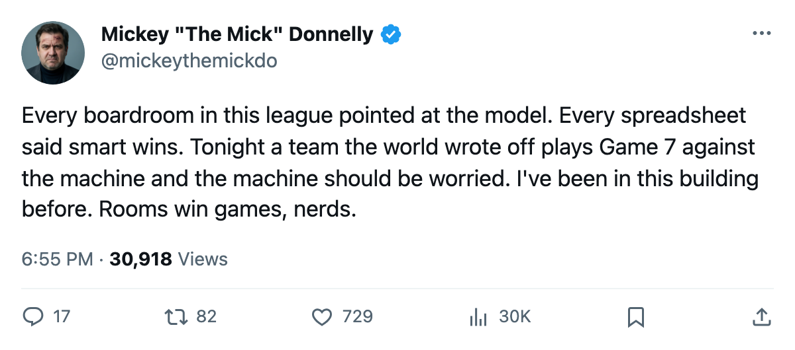
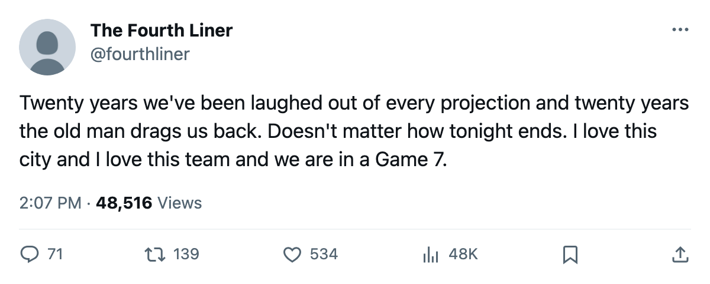

PIT
PITGAME 7: THE 24-WIN TEAM, THE 39-YEAR-OLD, AND THE HAPPY ROOM
Pittsburgh has a $44.95 million payroll, 13,990 seats, and Mario Lemieux on the far side of 39. Tonight they play for the conference final in Toronto.
 Mickey "The Mick" DonnellyColumnist, ex-goalie · The Penalty Box
Mickey "The Mick" DonnellyColumnist, ex-goalie · The Penalty Box
Pittsburgh plays Game 7 at Toronto tonight. Twenty-four wins. Eighty-five points. A $44.95 million payroll that fills 13,990 seats at $79 a night in a league where the team across from them charges $98 and fills 17,713. They're playing the best team in hockey and nobody outside Pittsburgh expected this.
 Mario Lemieux88 is 39 years old. He has 11 points in 12 playoff games. He was the first overall pick in 1984. Twenty-one years later he's carrying a 24-win team into a Game 7 on the road against a 59-win club, and the same people who told you
Mario Lemieux88 is 39 years old. He has 11 points in 12 playoff games. He was the first overall pick in 1984. Twenty-one years later he's carrying a 24-win team into a Game 7 on the road against a 59-win club, and the same people who told you  New Jersey Devils was the franchise to study have gone quiet.
New Jersey Devils was the franchise to study have gone quiet.
The model got it wrong and nobody is saying so
New Jersey Devils made $45.96 million in profit this year, the most of any club in the league. The Slot Report had them as the template. The smart machine. Pittsburgh beat them in six games. Six. A 24-win team ended the business plan everyone was writing white papers about, and now the Pens are 3-3 with  Toronto Maple Leafs heading into tonight.
Toronto Maple Leafs heading into tonight.
Toronto has 133 points. They scored 381 goals and allowed 190.  Roberto Luongo95 is 7-4 with a 1.99 GAA and a .945 save percentage in this postseason. They lead their division by 36 points over Boston and beat New York 4-1 in the first round. Their payroll is $60.04 million and their cost per point is $0.45 million. Everything about this franchise is working.
Roberto Luongo95 is 7-4 with a 1.99 GAA and a .945 save percentage in this postseason. They lead their division by 36 points over Boston and beat New York 4-1 in the first round. Their payroll is $60.04 million and their cost per point is $0.45 million. Everything about this franchise is working.
Pittsburgh: 255 goals for, 275 against.  Johan Hedberg88 is 6-5 with a 2.08 GAA and a .907. The morale reading is 95.4, fourth in the league. Nobody in their room shows on the Bureau's lowest-15 list.
Johan Hedberg88 is 6-5 with a 2.08 GAA and a .907. The morale reading is 95.4, fourth in the league. Nobody in their room shows on the Bureau's lowest-15 list.  Kelly Buchberger73 has 113 penalty minutes and a job.
Kelly Buchberger73 has 113 penalty minutes and a job.
The regular season record says 7-2-1 Toronto, 34-24 in goals. Tonight shouldn't be close. But Pittsburgh already won here, 2-0 in Game 5, and they won Game 6 at home in overtime 3-2.
I have been in the crease for Game 7s. I have watched teams with better rosters lose because the other room liked each other more and the old guy on their roster wasn't done. Lemieux isn't done. Hedberg isn't done. The Pens aren't done.
Pittsburgh tonight. I've been telling you all year.

